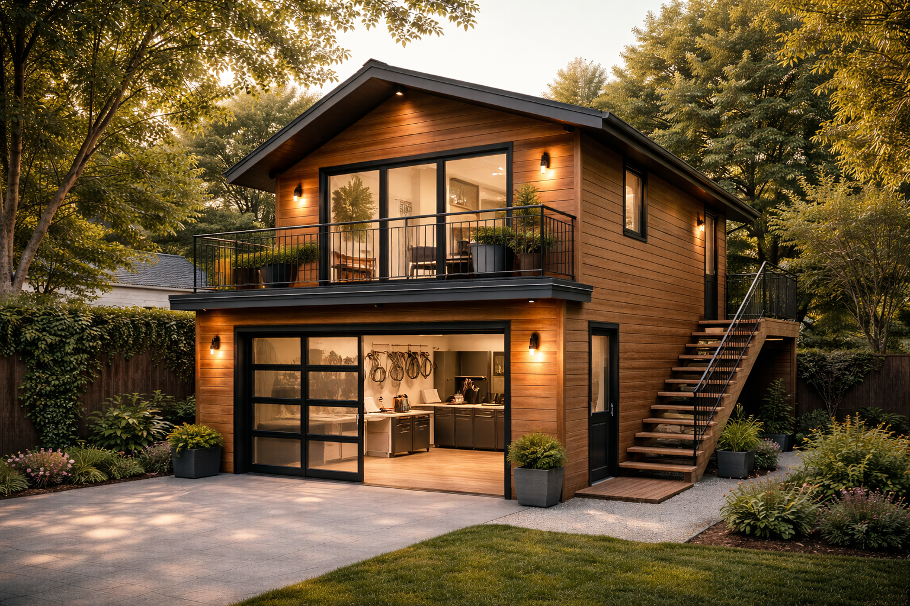
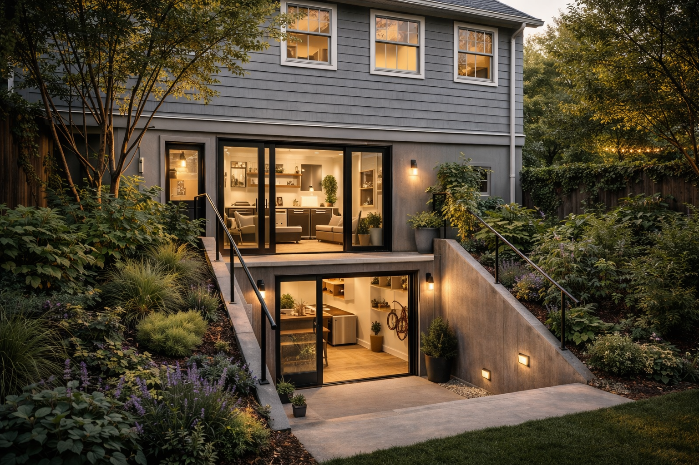
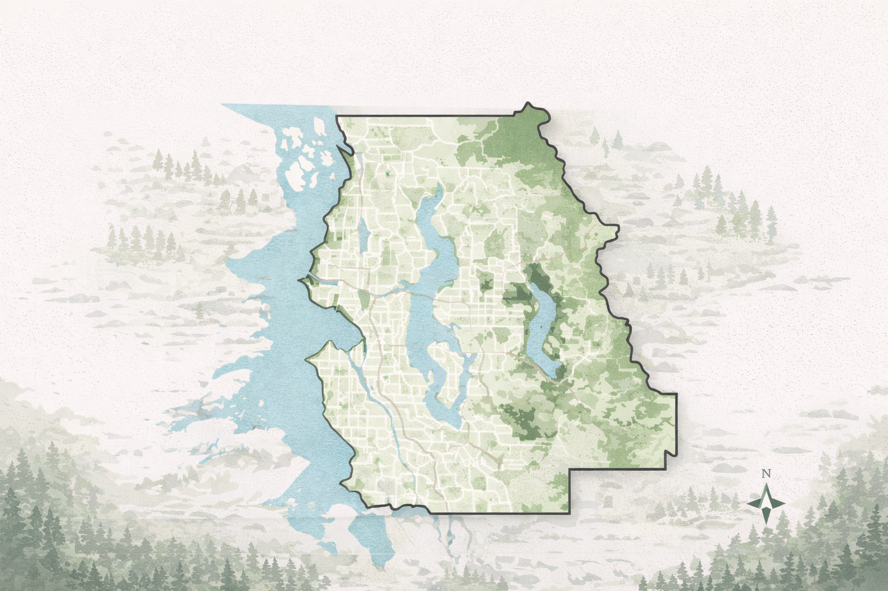

Can I Build an ADU?
Most single-family properties qualify. Eligibility depends on lot size, zoning, and existing structures. We help you understand your property's potential before you commit to anything.
King County ADU Specialists
Get matched with experienced, licensed ADU builders who understand King County zoning, permits, and real costs.
King County Projects
From detached backyard cottages to garage conversions — we've helped homeowners across Seattle, Bellevue, Redmond, Renton, and beyond.

Detached Backyard ADU — Bellevue

Garage Conversion — Redmond

Serving All of King County
Simple Process
Fill out our quick form. We'll ask about your lot, your goals, and your timeline — takes about 2 minutes.
We connect you with ADU experts who know King County zoning, permits, and the local market inside and out.
Free consultation to plan your project. Get realistic, itemized estimates from licensed, vetted builders.
Why Choose Us
"King County has made it easier than ever to build an ADU. The right builder makes all the difference — and we know exactly who to call."
— King County ADU SpecialistsFree Consultation
Tell us about your property and we'll connect you with King County's top-rated ADU builders — no obligation, no pressure.
Your Property Information
Resources
Most single-family properties in King County can build an ADU, but eligibility depends on lot size, zoning, and existing structures. Here's what you need to know before you start.
Most single-family properties qualify. Eligibility depends on lot size, zoning, and existing structures. We help you understand your property's potential before you commit to anything.
Permits are required for every ADU. Typical steps include site evaluation, permit submission, and city inspection. Our builders know the process and can guide you every step of the way.
Backyard cottages range from $150–$400 per square foot in King County. Costs vary based on size, type, and location. We connect you with builders who give realistic, itemized estimates.
Common Questions
Yes, all ADUs require a building permit. Our builders handle the permit process and know exactly what King County reviewers look for.
Typically 6–12 months depending on complexity, permit timelines, and the type of ADU. Permitting alone can take 2–4 months in some jurisdictions.
You must follow King County occupancy and rental rules. Once your certificate of occupancy is issued, rental is typically permitted right away.
Costs vary widely by type and size. We connect you with builders who provide accurate, itemized estimates based on your specific property and goals.